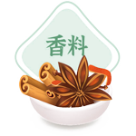

网站首页
中医简史
百味中药
中医养生
十大名医
关于作者
常见用途

常见方剂
蜜丸类
Mi-Maru
蜜丸名称:洋参养神丸
成分：黄精、西洋参、麦冬、五味子、辅料为蜂蜜
性状：本品为棕黄色的不规则蜜丸，味甘酸微苦
规格：每罐含药丸6g
功能主治：用于改善由于熬夜导致的胸闷、头痛、恶心等不良症状
用法用量： 口服，必要时用一次二十至三十丸或遵医嘱
贮藏：密闭，置阴凉干燥处
有效期：48个月
西洋参
不论是中医学还是现代医学的理论体系，都论证了睡眠对于保持人体健康的重要性。长期熬夜对于人体的损害极大，中医认为睡眠是在天地至暗之时，以应人体至静之动，是通过阳潜入阴，以滋养一身真阴的过程，如果错过睡眠时间，将对人体真阴造成极大的损耗，是在其他时间补不回来的。现代医学研究也表明，熬夜对于人体的神经系统和心血管系统将造成极大的损害。虽然熬夜对人体将造成严重危害已经成为医学界的重要共识，但现代人生活节奏快，由于工作、学习的原因，不得不进行熬夜。那么我们只能退而求其次，研究如何通过提前干预，将熬夜对人体的损害降到最低。本方是以《伤寒杂病论》中的生脉饮为基础，经过中国中医科学院数年的研究改良，形成该处方。只选用加拿大魁北克省所产的优质西洋参为主要，辅以其它道地药材，制成本品洋参养神丸。
散剂类
Dispersions
散剂名称:常服玉屏散
成分：黄芪、白术、防风
性状：为棕黄色的粉末，味甘微苦
功能主治：治疗体虚多汗、易感冒
用法用量： 口服，必要时用10g~15g或遵医嘱
贮藏：密闭，置阴凉干燥处
有效期：36个月
您是否曾经有过这样的疑问。
吃同样的东西，为什么别人都没事，只有您自己拉肚子去同样的地方玩，为什么别人都没事，只有您自己被传染了穿同样少的衣服，为什么别人都没事，只有您自己冻感冒了。这个答案其实我们每个人都知道，是因为抵抗力的不同引起的。现代医学引入所谓抵抗力这一概念，与传统中医所称卫气的卫外功能一致，指的都是机体抵御病邪的能力。抵抗力不足，就会落入常年生病服药--抵抗力进一步下降--更易发生疾病的恶性循环中。汉文中医谨守古方，制成常服玉屏风散，做到了“不治已病治未病”，御敌于国门之外，治疗在疾病发生之前。
膏滋类
Salve
膏滋名称:琼玉膏
成分：熟地、人参、茯苓、阿胶辅料为蜂蜜
性状：本品为粽褐色至黑褐色的膏体，味甘微苦
规格：每罐约520g
功能主治：治疗虚劳症候中辨证属气阴虚损的一类，以及用于预防秋冬季节流行性疾病
常服可常服开心益智,发白返黑,齿落更生,亦可辟谷延年
用法用量：口服一日两次，一次5~30ml或遵医嘱
贮藏：密闭，置阴凉干燥处
有效期：36个月
琼玉膏为我国道藏中所载著名
仙方，原名“铁瓮先生琼玉膏”
药酒类
Medicinal wine
药酒名称:跌打酒
成分：川乌 草乌 乳香 没药 自然铜 土鳖虫 续断 海风藤 王不留行 三七
功能主治：活血化瘀温经止痛、用于治疗外伤引起的肿痛
用法用量：外用，涂抹于患处施手法，每日三次或遵医嘱
注意事项：酒精过敏者禁用
贮藏：密闭，置阴凉干燥处
有效期：36个月
药膳类
Medicinal diet
药膳名称:当归生姜羊肉汤
成分：当归、生姜、玫瑰盐
功能主治：阳虚畏寒，精冷不育
用法用量：每包与羊肉1000g同煮50分钟
贮藏：密闭，置阴凉干燥处
有效期：36个月
张仲景在长沙做官，在告老还乡退休的时候，正赶上那年冬天，寒风刺骨，
雪花纷飞。在白河边上，张仲景看到很多无家可归的人面黄肌瘦，衣不遮体，
因为寒冷，把耳朵都冻烂了，心里十分难受。回到家后，由于张仲景的名声
早已经闻名天下，所以很多人上门求医。张仲景有求必应，整天都很忙碌，
可虽然上门求医的人很多，可张仲景依然挂念那些冻烂耳朵的人。经过研究，
他研制了一个可以御寒的食疗方子，叫祛寒娇耳汤。 他叫徒弟在南阳东关的一
个空地搭了个棚子，支上大锅，为穷人舍药治病，开张的那天正是冬至，舍的药就是
“祛寒娇耳汤”。祛寒娇耳汤当初其实就是把羊肉和一些祛寒的药物放在锅里煮，熟了以后捞出
来切碎，用面皮包成耳朵的样子，再下锅，用原汤再将包好馅料的面皮煮熟。面皮包好后，样子像
耳朵，又因为功效是是为了防止耳朵冻烂，所以张仲景给它取名叫“娇耳”张仲景让徒弟给每个穷人
一碗汤，两个“娇耳”，人们吃了“娇耳”，喝了汤，浑身发暖，两耳生热，再也没人把耳朵冻伤了。张仲景
是在冬至这天去世的，又是在冬至这天为大家舍“祛寒娇耳汤”的，为了纪念他，从此大家在冬至这天都要包
一顿饺子吃，并且都说，冬至这天吃了饺子，冬天耳朵就不会冻了。赤壁之战前后，张仲景为了躲避荆州的战
乱，带着弟子到岭南隐居，隐居期间，著成了传世巨薯《伤寒杂病论》，其中将“祛寒娇耳汤”改名为“当归
生姜羊肉汤”记载下来。
 网站首页
网站首页